功能介绍
当被动解闭锁功能开启时，携带智能蓝牙钥匙靠近车辆2m范围内，碰触门把手相应解闭锁位置，可以实现被动解闭锁功能。
① 激活状态—未激活
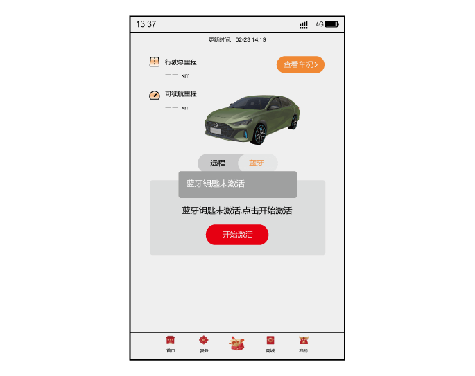进入车辆详情页面，获取车辆相关信息，包括蓝牙激活状态：
–已激活：显示“已激活”字样即可。
–未激活：红色字体显示“未激活”，同时可点击激活。
点击蓝牙激活状态“未激活”栏，判断该车辆是否为当前连接车辆：
–是，进入“开始激活”页面。
–否，进入“非当前连接车辆”提示。
蓝牙连接配对
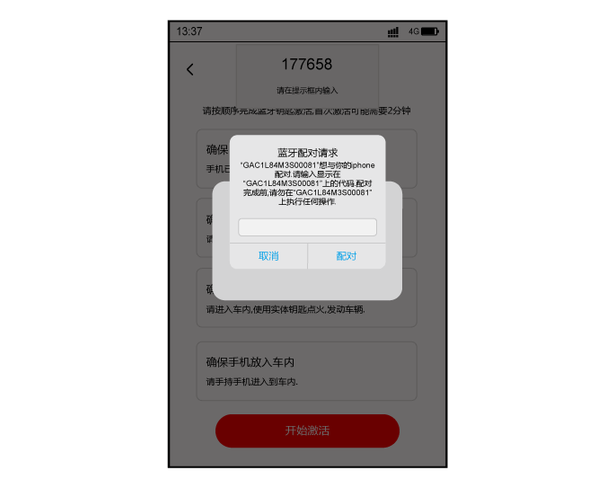–手机注册车联助手后，激活蓝牙钥匙，携带手机与车辆蓝牙连接配对。连接成功后，即可使用蓝牙钥匙功能。
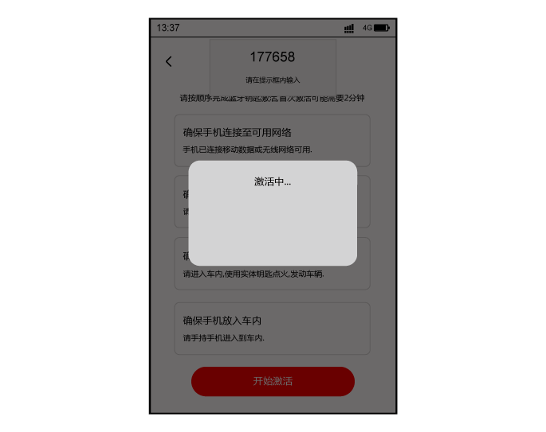
完成车辆绑定之后，首次使用需要进行激活。
–携带手机打开APP，整车电源置于“ON”位置，点击“蓝牙钥匙激活引导”页面的“开始激活”，开始蓝牙激活程序。点击之后，按钮文字变为“激活中……”。
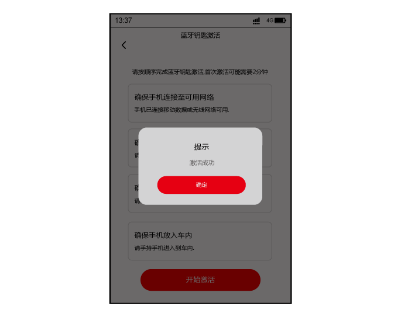
–若激活成功则进入智能蓝牙钥匙车控界面。
–若失败，则用户选择重试或返回。
蓝牙钥匙模式
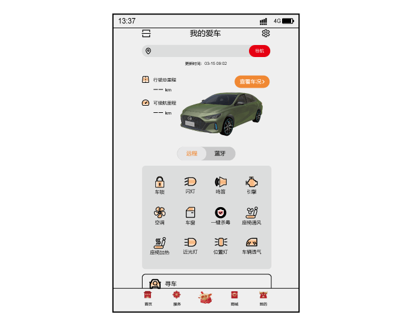–首次进入APP之后，点击“我”进入车辆设置，完成车辆绑定，切换至首页，点击连接方案切换网络连接为蓝牙连接。
–首次使用智能蓝牙钥匙需要先进行“激活”。使用原车钥匙点火后，在车内点击激活，对智能蓝牙钥匙进行认证激活操作。
–每次手机APP与蓝牙模块断开重联，为了保证您爱车的安全，APP都会进行一个“安全初始化”。安全初始化通过，则出现车控指令，您可通过手机APP对您的爱车进行相应的操作，亦可不依赖车钥匙，通过手机认证实现一键启动。若安全初始化失败，则弹出失败原因并提示重试。
① 车锁
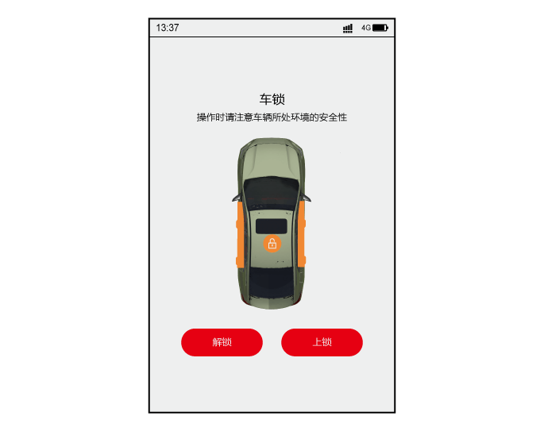点击首页车锁按钮进入该页面后可进行解闭锁操作。
–点击“闭锁”，车门闭锁，伴随鸣笛一声，双闪一下。
–点击“解锁”，车门解锁，伴随鸣笛两声，闪灯两下。
② 车窗
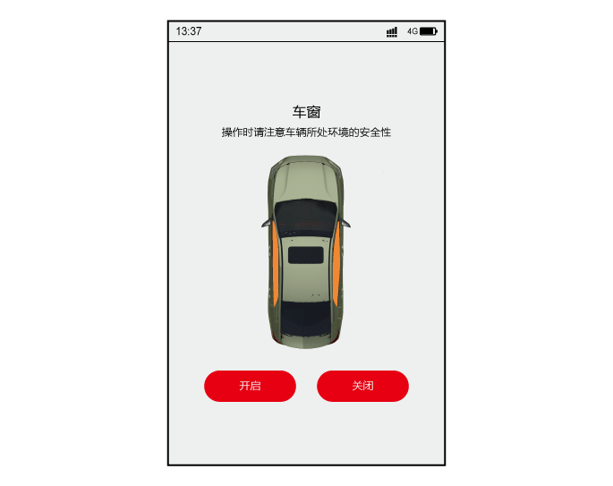点击首页车窗按钮进入该页面后可进行车窗操作。
–点击“开启车窗”，车窗下降。
–点击“关闭车窗”，车窗上升。
③ 天窗*
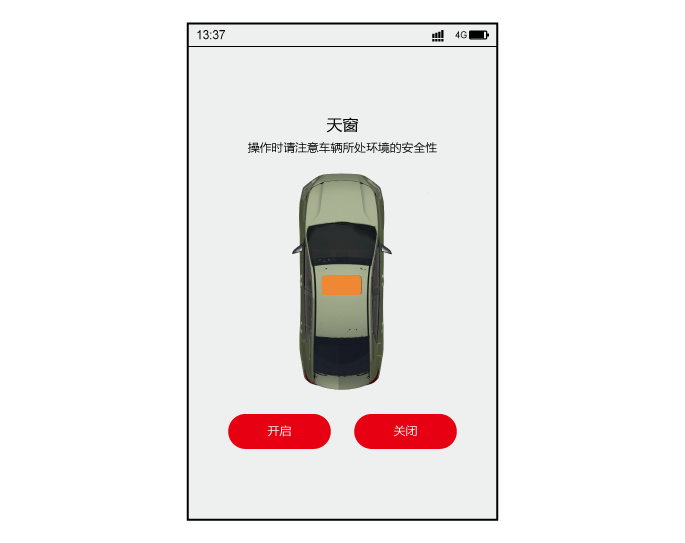点击首页天窗按钮进入该页面后可进行天窗操作。
–点击“开启天窗”，天窗打开。
–点击“关闭天窗”，天窗关闭。
④ 行李箱
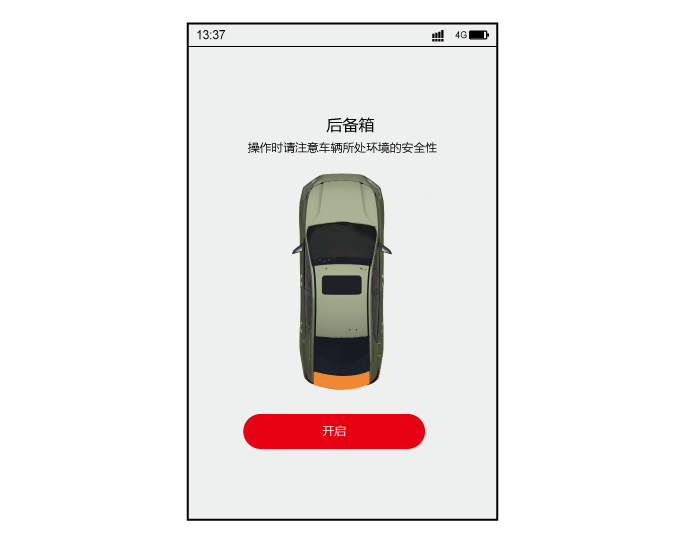点击首页行李箱按钮进入该页面后可进行行李箱操作。
–点击“开启行李箱”，行李箱解锁并弹开。
⑤ 鸣笛
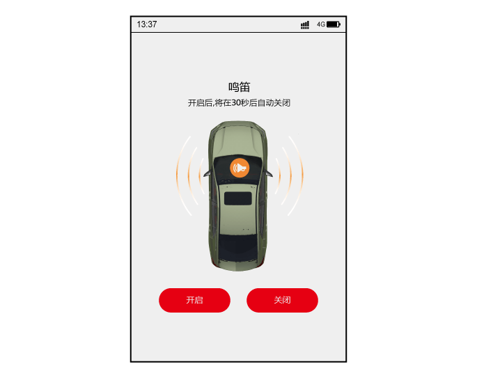点击首页鸣笛按钮进入该页面后可进行鸣笛操作。
–点击“开启鸣笛”，开始鸣笛。
–点击“关闭鸣笛”，停止鸣笛。
⑥ 闪灯
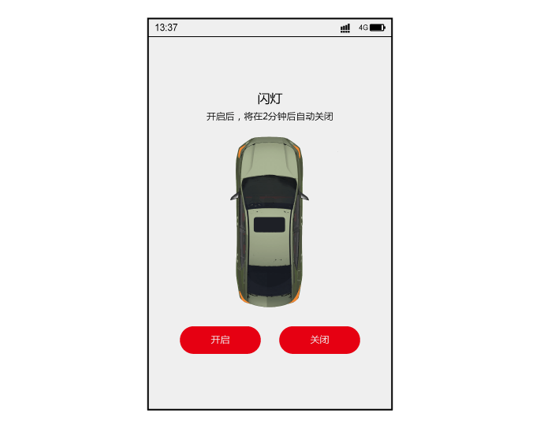点击首页闪灯按钮进入该页面后可进行闪灯操作。
–点击“开启闪灯”，开始闪灯。
–点击“关闭闪灯”，停止闪灯。

功能介绍
当被动解闭锁功能开启时，携带智能蓝牙钥匙靠近车辆2m范围内，碰触门把手相应解闭锁位置，可以实现被动解闭锁功能。

–当整车电源在“OFF”挡位时，携带智能蓝牙钥匙走近车门，将手伸入前车门把手内侧解锁区域，有效感应后所有车门解锁。
–当整车电源在“OFF”挡位时，携带智能蓝牙钥匙离开车内，将所有车门关闭后，按压闭锁按钮，有效感应后所有车门闭锁。
功能介绍
带着已激活智能蓝牙钥匙的手机并进行蓝牙连接，进入车内踩下刹车踏板，确保仪表显示挡位在P/N挡，启动开关背光颜色变为绿色后，按下启动开关，可正常启动车辆。智能蓝牙钥匙的启动与智能遥控钥匙一键启动功能相同。
使用条件：
1.手机装配了<广汽传祺>APP，并已完成激活蓝牙钥匙。
2.手机蓝牙和车端蓝牙模块处于连接状态。
3.手机放在中控扶手区域。
4.挡位在P/N挡。
5.踩下刹车。
蓝牙钥匙设置包含三部分：
1.蓝牙校准
2.蓝牙个性化设置
3.蓝牙修复
点击进入蓝牙校准页面进行设置：
–跳过，暂不校准：点击跳过此页面，进入下一步骤。
–开始校准：点击进入“校准倒计时”页面。
校准倒计时
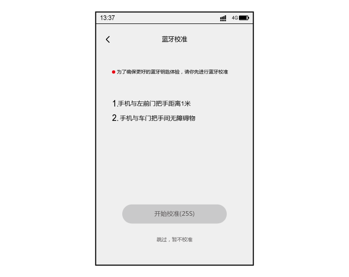进入蓝牙校准倒计时页面，点击开始校准之后，开始30s倒计时，同时开始校准。
–校准成功：弹出校准成功弹框。
–校准失败：30s计时结束未成功校准，则返回校准失败，请重试。
–蓝牙个性化设置包括：被动解闭锁功能设置*、离车提醒功能设置。
被动解闭锁功能设置*
–关闭该功能后，携带蓝牙钥匙触碰门把手解/闭锁区域，将不会进行解/闭锁响应。
–打开该功能后，携带蓝牙钥匙碰触门把手解/闭锁区域，整车将执行解/闭锁响应。
离车提醒功能设置
–关闭该功能后，将不再执行离车提醒功能。
–打开该功能后，整车电源置于“OFF”位置，蓝牙断开时若整车状态异常，将激活离车提醒功能。
–当用户手机端已经保存了蓝牙连接信息又重新安装APP使用时，可能会根据手机型号的不同，出现无法连接的情况，此时需要用户按照本页面提示进行操作，以清理用户手机中的蓝牙配对历史记录。
为了确保用户离车时用户及时确定整车安全，智能蓝牙钥匙提供离车提醒功能。
–整车电源在“OFF”状态下,若蓝牙断开时存在车窗未关、天窗*未关、车门未关、车门未锁、前机舱盖未关、行李箱盖未关状态，APP进行离车提醒，并通过震动、铃声及弹框通知用户。
–当完成激活之后，为了保证车辆安全，会在后台自动对手机与车辆的绑定状态进行联网更新。
–用户使用APP时若长期不连接网络，则在蓝牙钥匙即将到期时弹出蓝牙更新提醒，用户需要在手机联网的状态下运行APP一段时间，保证后台完成蓝牙钥匙更新。
— 页面到底了 —